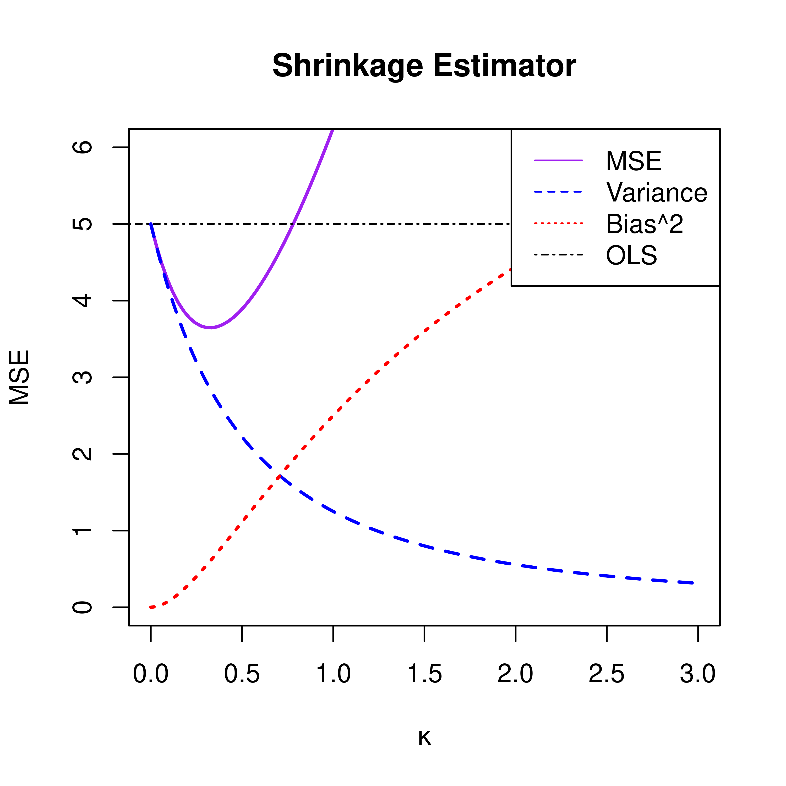
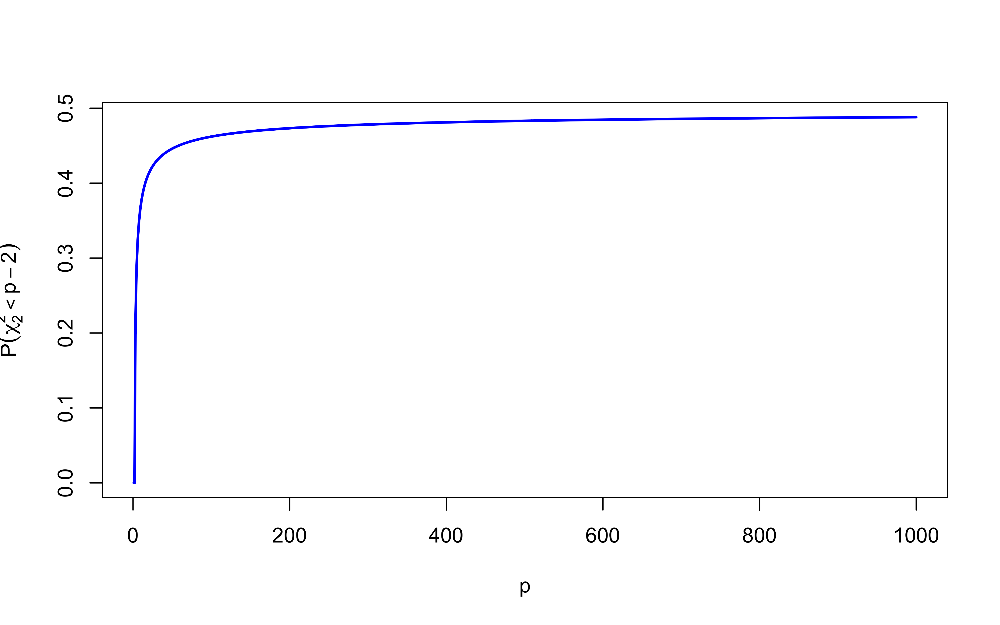
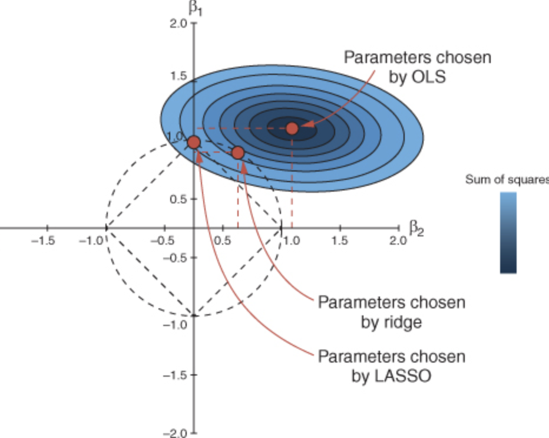

James-Stein Estimation and Shrinkage
STA 721: Lecture 10
Merlise Clyde (clyde@duke.edu)
Duke University
Outline
- Frequentist Risk in Orthogonal Regression
- James-Stein Estimation
Readings:
- Seber & Lee Chapter Chapter 12
Orthogonal Regression
Consider the model \(\mathbf{Y}= \mathbf{X}\boldsymbol{\beta}+ \mathbf{e}\) where \(\mathbf{X}\) is \(n \times p\) with \(n > p\) and \(\mathbf{X}^T\mathbf{X}= \mathbf{I}_p\).
If \(\mathbf{X}\) has orthogonal columns, then \(\hat{\boldsymbol{\beta}}= \mathbf{X}^T\mathbf{Y}\) is the OLS estimator of \(\boldsymbol{\beta}\).
The OLS estimator is unbiased and has minimum variance among all
The MSE for estimating \(\boldsymbol{\beta}\) is \(\textsf{E}_\mathbf{Y}[( \boldsymbol{\beta}- \hat{\boldsymbol{\beta}})^T(\boldsymbol{\beta}-\hat{\boldsymbol{\beta}})] = \sigma^2 \textsf{tr}[(\mathbf{X}^T\mathbf{X})^{-1}] = p\sigma^2\)
Can always take a general regression problem and transform design so that the model matrix has orthogonal columns \[\mathbf{X}\boldsymbol{\beta}= \mathbf{U}\boldsymbol{\Delta}\mathbf{V}^T \boldsymbol{\beta}= \mathbf{U}\boldsymbol{\alpha}\] where new parameters are \(\boldsymbol{\alpha}= \boldsymbol{\Delta}\mathbf{V}^T \boldsymbol{\beta}\) and \(\mathbf{U}^T\mathbf{U}= \mathbf{I}_p\).
Orthogonal polynomials, Fourier bases and wavelet regression are other examples.
\(\hat{\boldsymbol{\alpha}} = \mathbf{U}^T\mathbf{Y}\) and MSE of \(\hat{\boldsymbol{\alpha}}\) is \(p\sigma^2\)
so WLOG we will assume that \(\mathbf{X}\) has orthogonal columns
Shrinkage Estimators
- the \(g\)-prior and Ridge prior are equivalent in the orthogonal case \[\boldsymbol{\beta}\sim \textsf{N}(\mathbf{0}_p, \sigma^2 \mathbf{I}_p/\kappa)\] using the ridge parameterization of the prior \(\kappa = 1/g\)
- Bayes estimator in this case is \[\hat{\boldsymbol{\beta}}_\kappa = \frac{1}{1+\kappa} \hat{\boldsymbol{\beta}}\]
- MSE of \(\hat{\boldsymbol{\beta}}_\kappa\) is \[\textsf{MSE}(\hat{\boldsymbol{\beta}}_\kappa) = \frac{1}{(1+\kappa)^2} \sigma^2 p + \frac{\kappa^2}{(1 + \kappa)^2} \sum_{j=1}^{p} \beta_j^2\]
- squared bias term grows with \(\kappa\) and variance term decreases with \(\kappa\)
Shrinkage
in principle, with the right choice of \(\kappa\) we can get a better estimator and reduce the MSE
while not unbiased, what we pay for bias we can make up for with a reduction in variance
the variance-bias decomposition of MSE based on the plot suggests there is an optimal value of \(\kappa\) the improves over OLS in terms of MSE
“optimal” \(\kappa\) \[\kappa = \frac{p \sigma^2}{\|\boldsymbol{\beta}^*\|^2}\] where \(\boldsymbol{\beta}^*\) is the true value of \(\boldsymbol{\beta}\)
but never know that in practice!
Estimating \(\kappa\)
if we use the optimal \(\kappa\), the shrinkage estimator can be written as \[\tilde{\boldsymbol{\beta}}= \frac{\|\boldsymbol{\beta}\|^2}{p \sigma^2 + \|\boldsymbol{\beta}\|^2} \hat{\boldsymbol{\beta}}\] or \[\tilde{\boldsymbol{\beta}}= \left(1 - \frac{p\sigma^2}{p\sigma^2 + \|\boldsymbol{\beta}\|^2} \right) \hat{\boldsymbol{\beta}}\]
but note that \(\textsf{E}\|\hat{\boldsymbol{\beta}}\|^2 = p \sigma^2 + \|\boldsymbol{\beta}\|^2\) (the denominator)
plugging in \(\|\hat{\boldsymbol{\beta}}\|^2\) for the denominator leads to an estimator that we can compute! \[\tilde{\boldsymbol{\beta}}= \left(1 - \frac{p\sigma^2}{\|\hat{\boldsymbol{\beta}}\|^2} \right) \hat{\boldsymbol{\beta}}\]
James-Stein Estimators
in James and Stein (1961) proposed a shrinkage estimator that dominated the MLE for the mean of a multivariate normal distribution \[\tilde{\boldsymbol{\beta}}_{JS} = \left(1 - \frac{(p-2)\sigma^2}{\|\hat{\boldsymbol{\beta}}\|^2} \right) \hat{\boldsymbol{\beta}}\] (equivalent to our orthogonal regression case; just multiply everything by \(\mathbf{X}^T\) to show)
they showed that this is the best (in terms of smallest MSE) of all estimators of the form \(\left(1- \frac{b}{\|\hat{\boldsymbol{\beta}}\|^2} \right) \hat{\boldsymbol{\beta}}\)
it is possible to show that the MSE of the James-Stein estimator is \[\textsf{MSE}(\tilde{\boldsymbol{\beta}}_{JS}) = 2\sigma^2\] which is less than the MSE of the OLS estimator if \(p > 2\)! (more on this in STA732)
Negative Shrinkage?
one potential problem with the James-Stein estimator \[\tilde{\boldsymbol{\beta}}_{JS} = \left(1 - \frac{(p-2)\sigma^2}{\|\hat{\boldsymbol{\beta}}\|^2} \right) \hat{\boldsymbol{\beta}}\] is that the term in the parentheses can be negative if \(\|\hat{\boldsymbol{\beta}}\|^2 < (p-2)\sigma^2\)
How likely is this to happen?
Suppose that each of the parameters \(\beta_j\) are actually zero, then \(\hat{\boldsymbol{\beta}}\sim \textsf{N}(\mathbf{0}_p, \sigma^2 \mathbf{I}_p)\) then \(\|\hat{\boldsymbol{\beta}}\|^2 /\sigma^2 \sim \chi^2_p\)
compute the probability that \(\chi^2_p < (p-2)\)
so if the model is full of small effects, the James-Stein can lead to negative shrinkage!

Positive Part James-Stein Estimator
any shrinkage estimator of the form \(\tilde{\boldsymbol{\beta}}= (1 - b) \hat{\boldsymbol{\beta}}\) is inadmissible if the shrinkage factor is negative or greater than one (there is a better estimator)
Baranchik (1964) proposed the positive part James-Stein estimator \[\tilde{\boldsymbol{\beta}}_{PPJS} = \left(1 - \frac{(p-2)\sigma^2}{\|\hat{\boldsymbol{\beta}}\|^2} \right)^+ \hat{\boldsymbol{\beta}}\] where \((x)^+ = \max(x, 0)\)
This is the same as the James-Stein estimator if the shrinkage factor is positive and zero otherwise. (related to testing the null hypothesis that all the \(\beta_j\) are zero)
it turns out this is also inadmissible! ie there is another estimator that has smaller MSE!
if we care about admissibility, we may want to stick to Bayes rules that do not depend on the data!
more on admissibility & minimaxity in STA732!
Bayes and Admissibilty
Bayes rules based on proper priors are generally always admissible (see Christian Robert (2007) The Bayesian Choice for more details)
unique Bayes rules are admissible
Generalized Bayes rules based on improper priors may not be inadmissible, but this will depend on the loss function and the prior
under regularity conditions, limits of Bayes rules will be admissible
the Positive-Part James-Stein estimator fails to be admissible under squared error loss as Bayes risk is not continuous
Positive Part James-Stein Estimator and Testimators
the positive part James-Stein estimator can be shown to be related to testimators where if we fail to reject the hypothesis that all the \(\beta_j\) are zero at some level, we set all coefficients to zero, and otherwise we shrink the coefficients by an amount that depends on how large the test statistic (\(\|\hat{\boldsymbol{\beta}}\|^2\)) is.
note this can shrink all the coefficients to zero if the majority are small so increased bias for large coefficients that are not zero!
this is a form of model selection where we are selecting the model that has all the coefficients zero!
LASSO Estimator
an alternative estimator that allows for shrinkage and selection is the LASSO (Least Absolute Shrinkage and Selection Operator).
the LASSO replaces the penalty term in the ridge regression with an \(L_1\) penalty term \[\hat{\boldsymbol{\beta}}_{LASSO} = \mathop{\mathrm{argmin}}_{\boldsymbol{\beta}} \left\{ \|\mathbf{Y}- \mathbf{X}\boldsymbol{\beta}\|^2 + \lambda \|\boldsymbol{\beta}\|_1 \right\}\]
the LASSO can also be shown to be the posterior mode of a Bayesian model with independent Laplace or double exponential prior distributions on the coefficients.
as the double exponential prior is a “scale” mixture of normals, this provides a generalization of the ridge regression.
